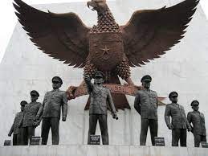

|
1) PERISTIWA G30S 2) SEJARAH G30S |
3) TUGAS G30S 4) KRONOLOGI G30S 5) KORBAN G30S |
G30S
1) PERISTIWA G30S 2) SEJARAH G30S 3) TUGAS G30S 4) KRONOLOGI G30S 5) KORBAN G30S

G30S adalah sebuah peristiwa bersejarah yang terjadi pada malam tanggal 30
September hingga awal 1 Oktober 1965 di Indonesia. Peristiwa ini juga dikenal
dengan sebutan Gestapu (Gerakan September Tiga Puluh) dan Gestok (Gerakan Satu Oktober).
Gerakan ini melibatkan pembunuhan enam perwira tinggi militer Indonesia dan beberapa
orang lainnya dalam usaha percobaan kudeta yang kemudian dituduhkan kepada anggota
Partai Komunis Indonesia (PKI).
Peristiwa G30S terjadi pada masa pemerintahan Presiden Sukarno yang menerapkan
"Demokrasi Terpimpin". PKI, sebagai partai Stalinis terbesar di luar Tiongkok dan
Uni Soviet, memiliki lebih dari 20 juta anggota yang mengendalikan gerakan serikat
buruh dan petani di Indonesia. Pada Juli 1959, parlemen dibubarkan, Sukarno menetapkan
konstitusi melalui dekret presiden dengan dukungan PKI, memperkuat angkatan bersenjata
dengan mengangkat jenderal ke posisi kunci.
Meskipun kolaborasi PKI dengan borjuis nasional gagal menyelesaikan masalah politik dan
ekonomi, PKI menguasai organisasi massa dan membentuk "Angkatan Kelima" bersenjata
dengan persetujuan Sukarno. Mulai tahun 1963, PKI berusaha menghindari bentrokan dengan
polisi dan militer, menekankan "kepentingan bersama." Pemimpin PKI, D.N. Aidit,
mempromosikan hubungan baik dengan angkatan bersenjata dan mendukung seniman sayap kiri.
Pada akhir 1964 dan awal 1965, gerakan petani merampas tanah, menyebabkan bentrokan dengan
polisi dan pemilik tanah. PKI mengimbau pendukungnya untuk tidak menggunakan kekerasan dan
meningkatkan kerja sama dengan unsur-unsur lain. Pada awal 1965, buruh menyita perusahaan-
perusahaan milik AS, PKI masuk pemerintahan secara resmi, dengan jenderal militer juga di
kabinet. Menteri-menteri PKI duduk bersama petinggi militer, terus mempromosikan angkatan
bersenjata sebagai bagian dari revolusi demokratis rakyat.
✠ Merusak integritas Negara Kesatuan Republik Indonesia (NKRI) dengan tujuan mengubahnya
menjadi sebuah negara berideologi komunis.
✠ Menggusur Angkatan Darat Tentara Nasional Indonesia (TNI AD) dan mengambil alih kendali
pemerintahan.
✠ Merealisasikan tujuan PKI, yang melibatkan penerapan ideologi komunis dalam membentuk
struktur pemerintahan sebagai sarana untuk mencapai masyarakat berideologi komunis.
✠ Mengganti ideologi Pnacasila menjadi ideologi komunis.
✠ Kudeta yang dilakukan kepada Presiden Soekarno tak lepas dari rangkaian kegiatan komunisme
internasional.
Penyebaran ideologi komunis oleh PKI menimbulkan kecurigaan dari kelompok anti-komunis, yang
juga meningkatkan rivalitas di antara elit politik nasional. Kecurigaan tersebut menciptakan
rumor di masyarakat terutama terkait kesehatan Presiden Soekarno dan Dewan Jenderal Angkatan Darat.
Dalam konteks ketidakpastian tersebut, Letnan Kolonel Untung, pemimpin Batalyon I Kawal Resimen
Cakrabirawa, pasukan pengawal khusus Presiden, memimpin sekelompok pasukan dalam aksi bersenjata di
Jakarta, meninggalkan daerah Lubang Buaya. Kejadian ini terjadi pada tengah malam, menjelang pergantian
tanggal dari Kamis, 30 September 1956, ke Jumat, 1 Oktober 1965. Kudeta yang sebelumnya dikenal sebagai
Operasi Takari diubah namanya menjadi Gerakan 30 September. Pasukan ini menculik dan membunuh sejumlah
perwira tinggi Angkatan Darat, berhasil menculik enam perwira tinggi pada tanggal 30 September.

Dalam peristiwa G30S ini, tujuh perwira tinggi militer Indonesia tewas sebagai hasil dari serangan yang
terjadi. Kematian perwira-perwira ini merupakan bagian dari peristiwa tragis yang mengguncangkan Indonesia pada waktu
itu dan membawa dampak yang signifikan terhadap dinamika politik dan militer di negara tersebut.